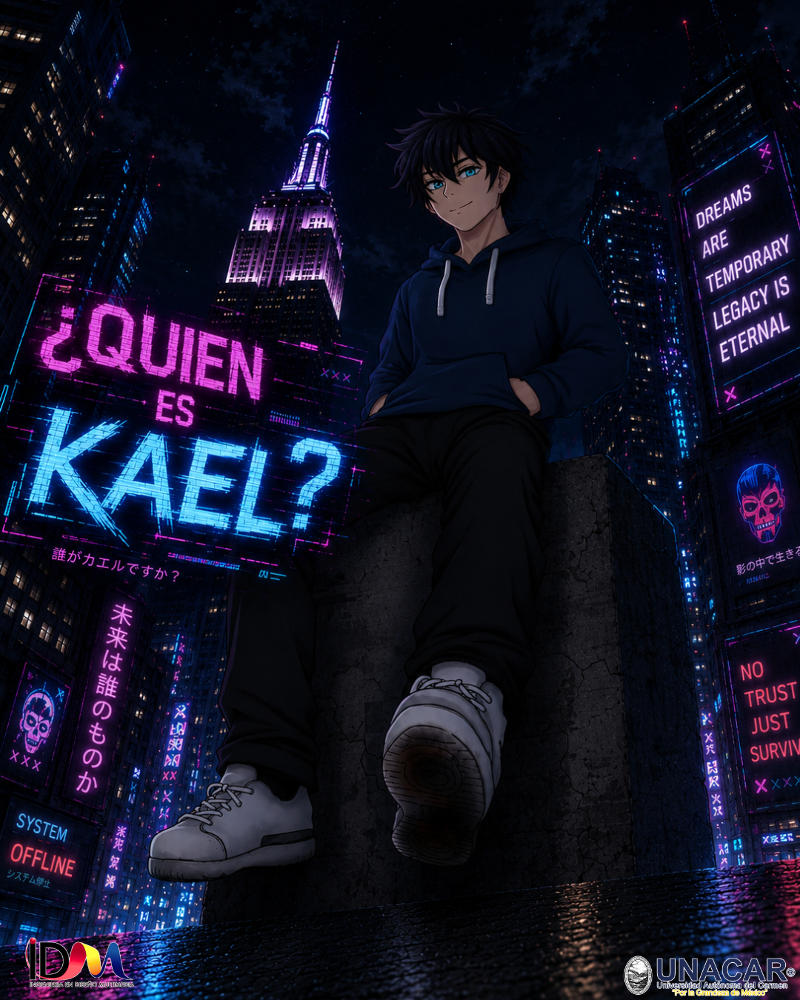

FORMA BASE
Logline
En un mundo donde el poder consume la memoria, un héroe de élite que ha olvidado su pasado debe enfrentar a una entidad caótica nacida de las identidades perdidas de otros héroes, mientras decide si salvar el presente vale el precio de borrarse a sí mismo por completo.
Sinopsis
En una ciudad donde convertirse en héroe exige un costo devastador, cuanto más tiempo se permanece en la "forma elevada", más se desvanece la identidad original. Kael es uno de los defensores más respetados, pero lleva tanto tiempo transformado que ha perdido todo rastro de quién era: no recuerda su nombre real, su pasado ni sus motivaciones; solo existe como una herramienta de protección.
El punto de quiebre llega cuando comienza a experimentar fallas y "glitches" que proyectan fragmentos de recuerdos ajenos. Al enfrentarse a una amenaza inestable conocida como NUL —una acumulación de héroes caídos que perdieron su humanidad—, Kael descubre que su poder funciona bajo una regla cruel: pelear significa olvidar. Ante la destrucción inminente y el eco de una promesa materna, deberá elegir entre mantenerse como un símbolo vacío de perfección o arriesgar el último fragmento de su ser para redefinir quién decide ser ahora.

Conoce a los Personajes
Kael (Alias Asignado)
ProtagonistaEdad: 22 años | Ocupación: Unidad de Respuesta Avanzada (HAB)
Forma Base: Un joven de aspecto completamente normal, mirada tranquila y postura relajada. Sin embargo, sufre constantes "glitches" corporales, parpadeos de frames y desajustes en su reflejo que revelan cómo su humanidad se desmorona.
Forma Heroica: Su silueta se vuelve alta y dominante. Se materializa un traje táctico-orgánico en capas negras y grises con líneas azul eléctrico y fragmentos flotantes orbitando su espalda. Sus ojos brillan sin pupilas y una máscara angular sella su rostro.
Poder & Conflicto: Su "Desfase Adaptativo" le permite replicar velocidad extrema y crear ecos de sí mismo en combate. La regla cruel: cada habilidad especial consume y borra permanentemente sus emociones, conexiones y memorias del pasado.
NUL (El Vacío Residual)
Amenaza PrincipalNaturaleza: Entidad inestable formada por el colapso masivo de identidades de héroes perdidos que no pudieron regresar a su forma base. Representa el error del sistema de transformación y el destino trágico que acecha a Kael.
Descripción Visual: Una figura humanoide cambiante hecha de fragmentos de trajes rotos y fusionados. No tiene rostro, sino una superficie oscura agrietada de luz. Se desplaza saltándose frames en la realidad, emite ecos de voces superpuestas y altera el entorno físico a su alrededor.
Motivación: No actúa por malicia, sino por un impulso inquietante de absorber identidades ajenas para intentar estabilizar su propia estructura, viendo a Kael como su objetivo principal.
Dr. Sena Oric
CientíficaOperadora principal de la agencia HAB. Viste una bata técnica equipada con interfaces proyectadas y lentes holográficos. Ella monitorea, regula y diagnostica los límites de transformación de los héroes, buscando incansablemente una cura para el desgaste de Kael.
Iris Vaal
Héroe MenorHéroe de silueta esbelta con un traje blanco perlado y líneas de luz líquida. Cuenta con ojos translúcidos de cristal y la capacidad de refractar su cuerpo en múltiples copias lumínicas para confundir o guiar civiles en zonas de riesgo.
Rook-17
Héroe de ContenciónUna robusta figura de combate protegida por una armadura modular gris oscuro. Su habilidad principal es la generación de barreras geométricas dinámicas que se reconfiguran en tiempo real para contener explosiones y amenazas críticas.
Limax
Villano MenorMutante de aspecto encorvado y piel translúcida. Carga en su espalda una gran concha espiralada con un brillo verdoso que emite ondas psíquicas. Controla las mentes de los civiles a través de frecuencias y un rastro viscoso que los vuelve dóciles.